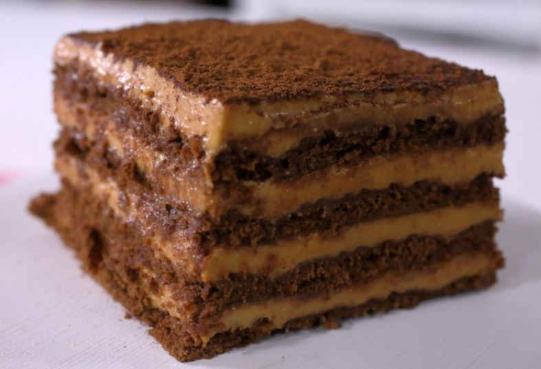

Chocotorta con chocolinas

Ingredientes
- Dulce de leche 400grs
- Crema 150 grs
- 500 cc de leche
- Queso crema, un pote de Casancrem o cualquier otra marca
- 3 paquetes de chocolinas
- Cobertura de chocolate o chocolate para derretir
Receta
- En un bowl vamos a colocar la totalidad del pote de queso crema, siendo unos 400 grs aproximadamente. Además, sumamos el dulce de leche y lo mezclamos hasta que estén perfectamente integrados.
- Ahora vamos a tomar las galletitas chocolinas y las vamos a remojar en leche, para darle un poco de humedad. Estas las vamos a colocar formando un piso en una fuente de vidrio o cualquier otra, que después podamos llevar a la heladera. Sobre el piso de galletitas vamos a colocar un poco de la mezcla realizada antes, cubriendo por completo.
- Vamos a repetir el paso 2 hasta que ya no queden chocolinas, ni la crema preparada. Con unas 4 capas debería estar perfecta.
- Cuando tengamos todo listo, vamos a llevar a enfriar nuestra chocotorta a la heladera por una hora aproximadamente.
- Finalmente podés terminar la preparación con una ultima capa de crema, con dulce de leche o chocolate fundido, dependiendo de lo que más les guste.